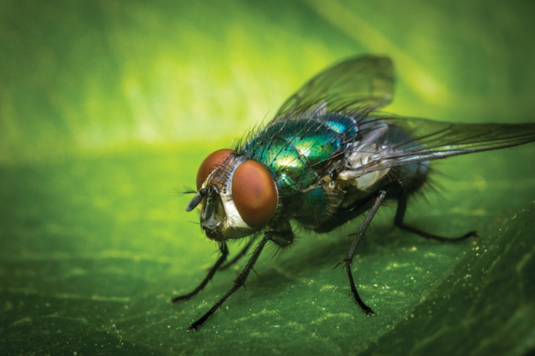

1- Ao contrário do que muitas pessoas pensam, as formigas são extremamente fortes. Elas têm a capacidade de transportar entre 10 e 50 vezes seu próprio peso corporal. A quantidade que uma formiga pode transportar depende da espécie. Uma espécie asiática de formiga pode levantar até 100 vezes a sua própria massa!
2- As colônias das abelhas possuem cheiros diferentes, desta maneira as abelhas conseguem guardar o lugar e não errar o “endereço” de casa.
3- Parece um tanto estranho para nós, mas as borboletas, assim como alguns insetos sentem os sabores pelos pés. Essa é uma ótima forma de saber qual local é seguro para pousar, se alimentar e até reproduzir. E se você imagina que deve ser desagradável pisar por aí sentindo o gosto de tudo, saiba que essa é uma característica evolutiva importante para os insetos!

4- O "cri cri cri" do grilo é produzido quando ele roça suas assas umas sobre as outras. O grilo é um inseto saltador, que mesmo tendo assas não pode voar!
5- Os besouros tem um par de assas duras que protegem um segundo par de assas. A joaninha também é da familia dos besouros.
6- A mosca vive em torno de 30 dias, e ela bate suas assas 330 vezes por segundo. Sendo bem mais rápido que o beija-flor
